작업 흐름
- 입력
- 장소 한 줄 (누구의 어떤 곳인지, 어느 지역과 시대인지)
- 브리프
- 건축 양식 · 땅 · 식생 · 물, 좌표가 있는 배치도(가운데 · 랜드마크 5–9곳 · 길 · 가장자리), 상태별로 보여 줄 것, 새로 만들 것
- 땅과 건물
- 높이 함수와 개울 · 연못 · 길, 부품(개구부가 뚫린 벽 · 창 · 문 · 지붕)으로 짓는 건물, GPU에서 굽는 재질
- 살림과 식생
- 소품과 등불, 숫자로 기르는 나무, 지형 맵에서 자라는 풀 · 들꽃 · 고사리, 산책 경로와 지명
- 평가와 검사
- 스틸을 레퍼런스 옆에 놓고 부족한 점부터 고치는 반복, 보행 지도와 산책 스트립, 산책 경로와 상태별 화면 자동 검사
- 출력
- 걸어 다니는 HTML 한 파일, 시점별 스틸과 상태별 콘택트 시트, 산책 영상 MP4
node living-realm/scripts/build.mjs living-realm/examples/village # index.html
node living-realm/scripts/check.mjs living-realm/examples/village # check OK
node living-realm/scripts/check.mjs living-realm/examples/village --walk # 보행 지도 out/walk.png
node living-realm/scripts/render.mjs living-realm/examples/village --views
node living-realm/scripts/render.mjs living-realm/examples/village --sheet --scale .5
node living-realm/scripts/render.mjs living-realm/examples/village --tour 16 --scale .5
node living-realm/scripts/new-realm.mjs ~/my-realm # 새 장소 폴더조작: W A S D · 방향키로 걷기, Q E · ← →로 돌기, 마우스 · 터치로 둘러보기, Shift 달리기, 1–4 시간, 5–7 날씨, T 자동 순환, C 자동 산책, G 품질, P 성능 수치. 요구 사항: Node 18+, Playwright Chromium, ffmpeg. 페이지는 WebGL 2와 GPU가 필요합니다(GPU 없이도 스틸은 렌더되며 한 장에 10–60초). 단계별 순서는 SKILL.md에 있습니다.
샘플
원본 영상은 건물이 없는 숲과 초원입니다. 예제 「은여울 마을」은 같은 화면 요소로 요청받은 주제(MMORPG 마을, 낮밤 · 비 · 겨울, 키보드로 걷기)를 브리프부터 새로 설계했습니다. 카드를 누르면 라이브 페이지가 그 자리 · 그 시간 · 그 날씨로 열립니다. 첫 결과가 밋밋하다는 평가를 받은 뒤 스틸의 밝기 · 채도 · 그늘 깊이를 재서 톤과 대기, 풀의 깊이, 벽의 낡음을 다시 잡았습니다. 스틸은 GPU가 없는 환경에서 CPU로 렌더한 것입니다.
은여울 마을 건물 25동 · 지름 300 m
개울을 건너는 여울목에 선 마을입니다. 분수 광장을 가운데 두고 여관 · 대장간 · 빵집, 언덕의 예배당, 개울의 물레방아, 언덕 위 풍차, 초원으로 가는 돌다리, 숲길 끝의 빈터, 남문과 목책이 있습니다.
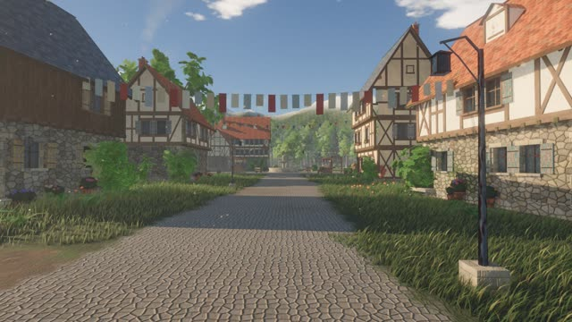
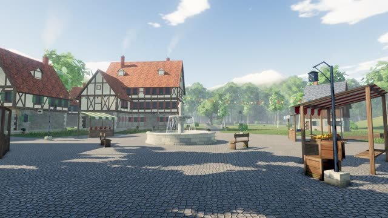
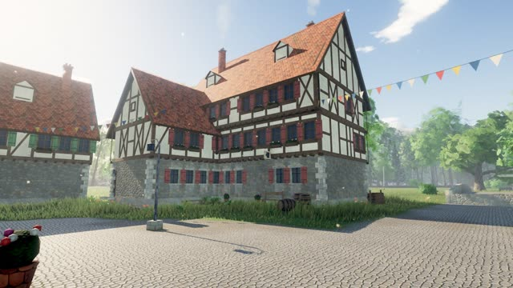
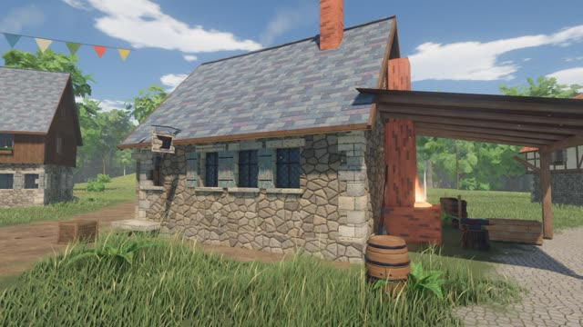
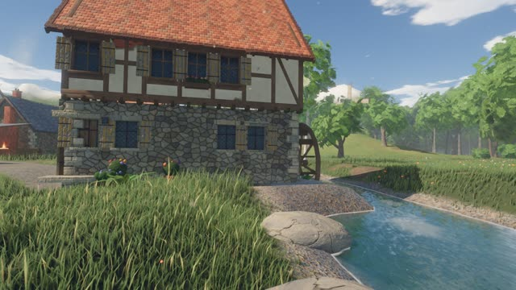
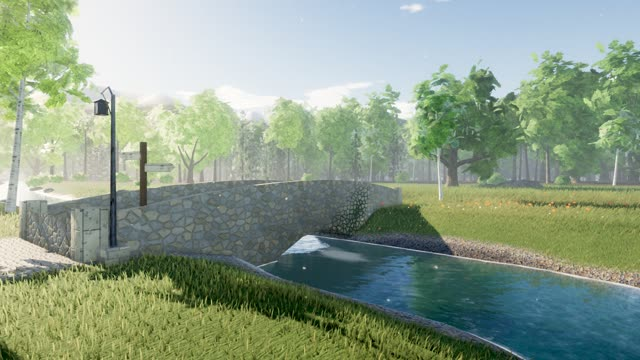
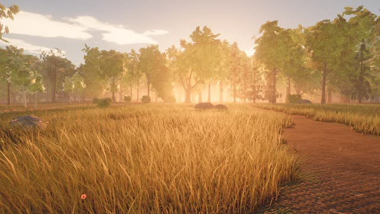
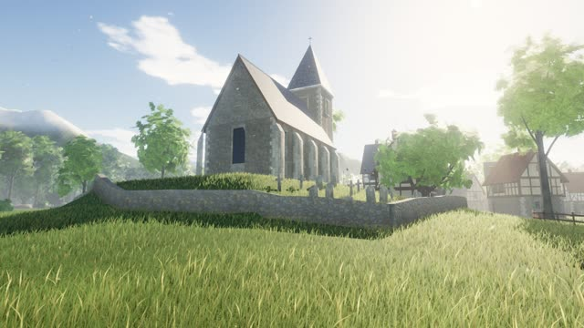
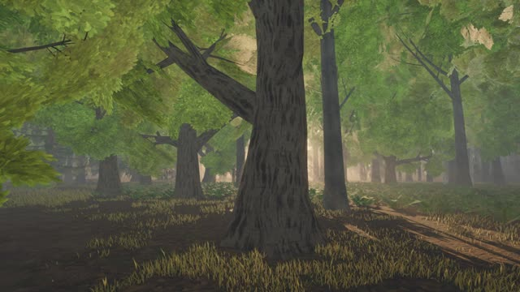
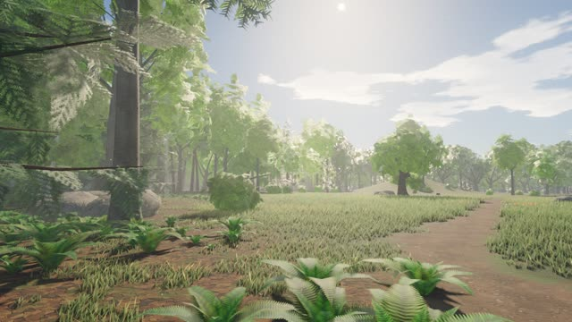
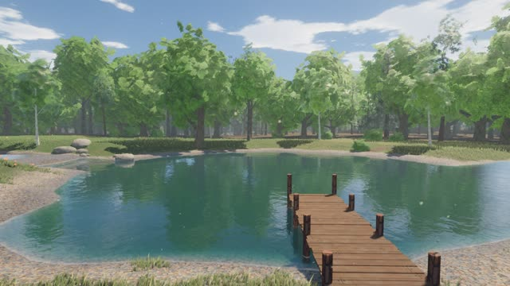
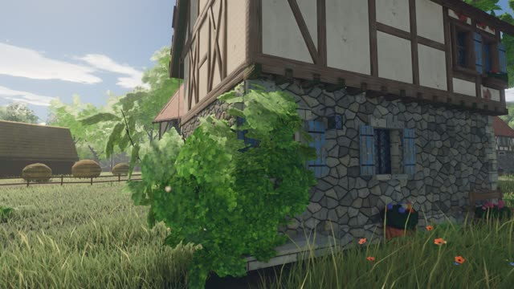
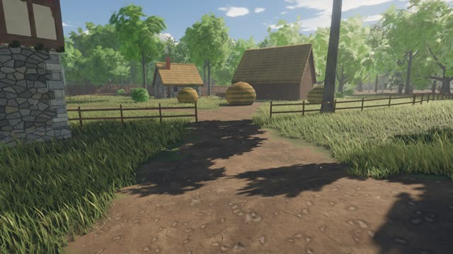
시간 · 날씨 상태 하나가 이어서 바뀜
시간 · 계절 · 날씨는 한 상태값이고 하늘 · 안개 · 표면 · 식물 · 입자 · 소리가 모두 그 값을 읽습니다. 구름이 모인 뒤에 비가 오고, 돌이 젖은 뒤에 웅덩이가 차고, 잎이 진 뒤에 눈이 쌓입니다.
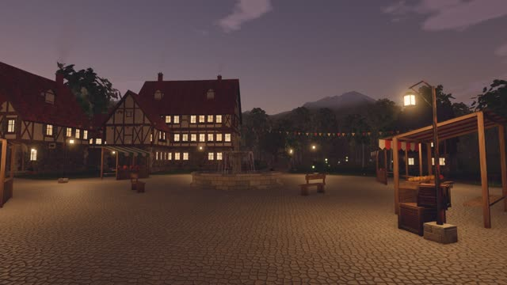
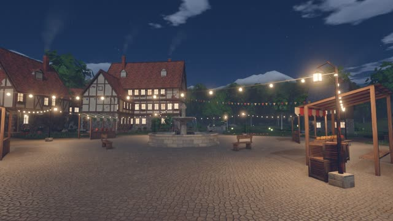
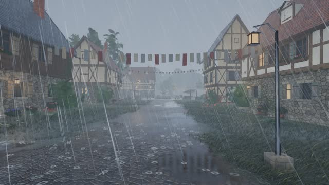
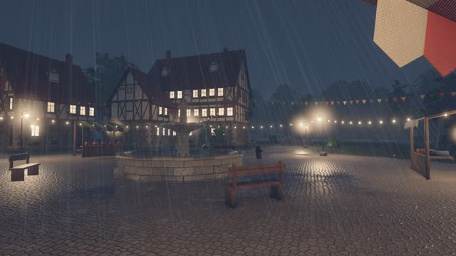
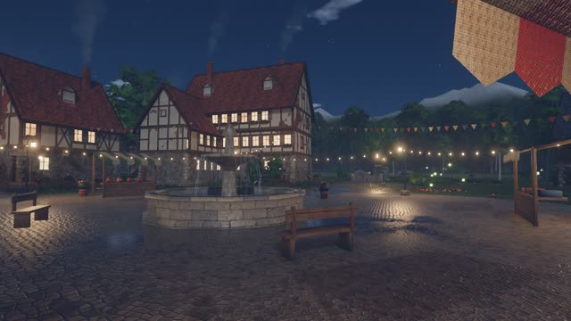
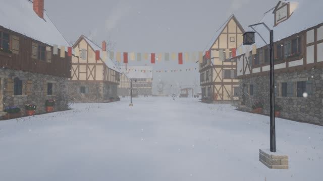
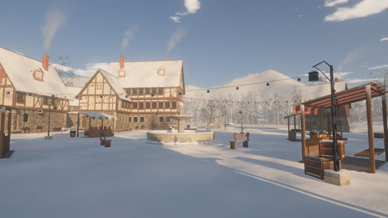
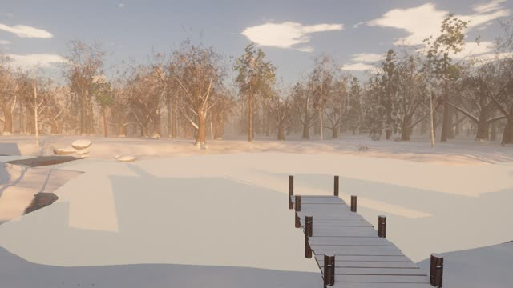
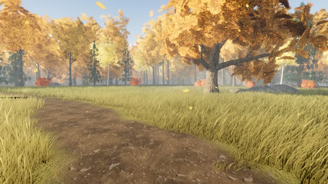
다른 주제 스타터
같은 엔진으로 전혀 다른 장소를 만든 최소 예제입니다. 새 장소는 이 폴더를 복사해 시작합니다.
검증 상태별 시트 · 재질 · 배치 · 보행 지도 · 산책 스트립
check.mjs가 산책 경로 전체를 벽 · 나무 · 깊은 물과 대조하고, 시점마다 낮 · 노을 · 밤 · 비 · 눈을 렌더해 비었는지 · 밤이 낮보다 어두운지 · 날씨가 화면을 바꾸는지 확인합니다.
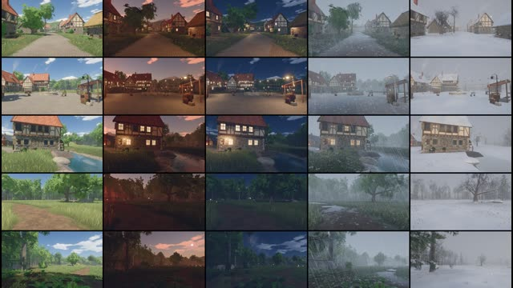
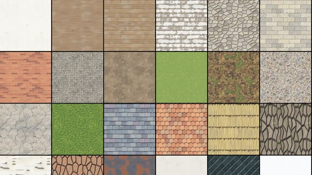
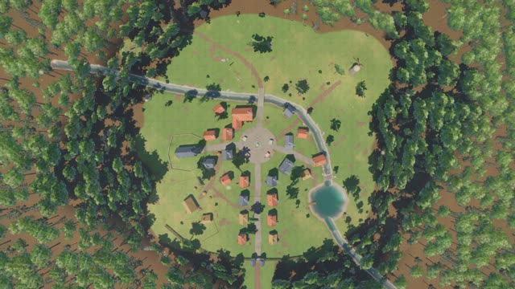
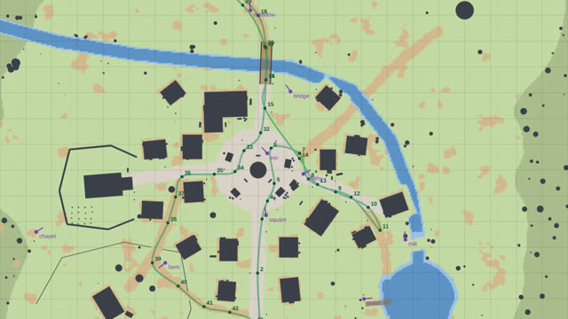
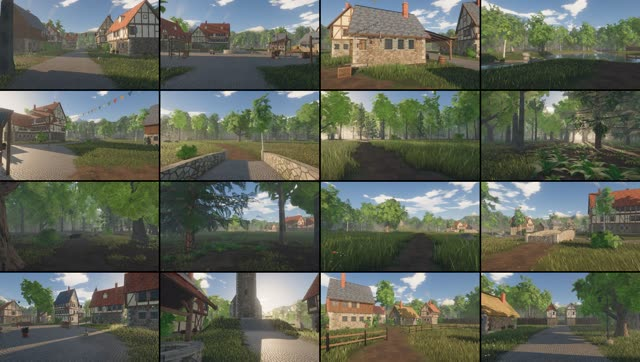
실제 작품
이 스킬은 이 레포에서 예제 「은여울 마을」을 만들며 다듬었습니다. 출처는 Rez의 X 게시물입니다.
링크
- SKILL.md 워크플로 · 규칙 · 계약
- 폴더 lib · scripts · references · starter · examples
- README.md 빠른 시작 · 조작
- references/BRIEF.md 주제 → 브리프, 검토 기준
- references/LOOK.md 화면을 이루는 열 가지와 한계
- references/KIT.md 모든 빌더와 옵션
- references/PERF.md 프레임 구성 · 예산 · 느릴 때
- references/SOURCE.md 출처에서 읽은 것, Blender · Rust · WebGPU를 쓰지 않은 이유
- references/LESSONS.md 겪은 문제와 해결, 레퍼런스와 견준 자체 평가